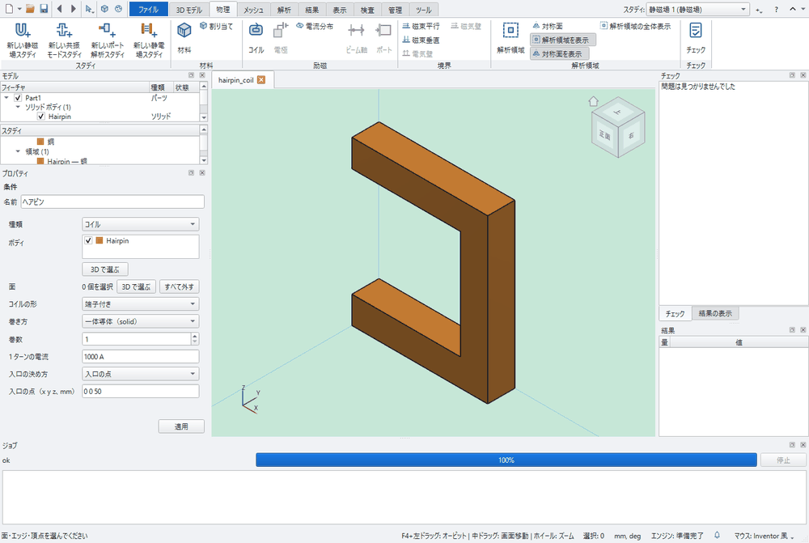
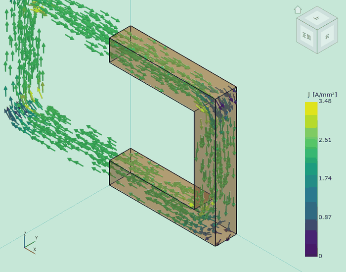
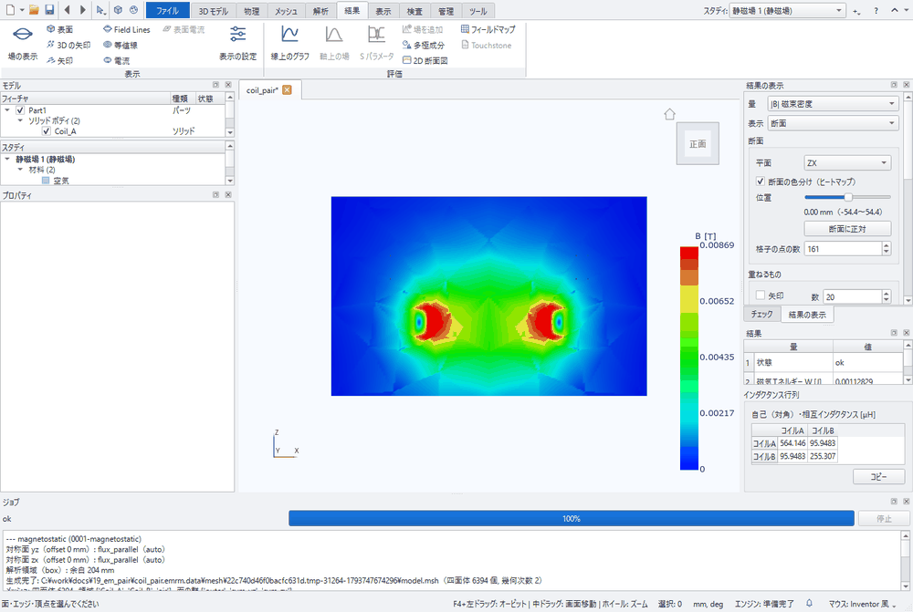

第 19 章
静磁場解析: コイル
静磁場 この章では、静磁場のスタディのコイルの設定を詳しく説明します。コイルの形（ループ・断面で決めるループ・端子付き）、巻数と電流、向き、巻き方、複数のコイルのインダクタンス行列です。
19.1 コイルの欄
コイルは「どのボディに」「どの路で」「どれだけ」電流を流すかの設定です。リボンの［物理］タブ → ［励磁］パネル → ［コイル］で作り、プロパティ パネルで次の欄を入れます。
| 欄 | 内容 |
|---|---|
| ［ボディ］ | 電流を流すボディ（複数可）。一覧のチェックか、［3D で選ぶ］の間の 3D ビューのクリックで入れる・外す |
| ［コイルの形］ | ［ループ（軸と向き）］・［ループ（断面と電流の向き）］・［端子付き］ |
| ［巻き方］ | ［多数巻き（stranded）］・［一体導体（solid）］ |
| ［巻数］・［1 ターンの電流］ | 巻線の断面を貫くターン数（モデル全体の値）と、導線 1 本の電流（100 A・2*I_main など） |
| ［向き］・［コイルの軸］ | ループのとき。右ねじか逆、軸の向き（X・Y・Z・任意の向き）と、軸が通る点 |
19.2 ループのコイル
ソレノイド・パンケーキ・レーストラックのように、電流が軸のまわりを一周して閉じるコイルです。入口・出口はありません。コイルのボディの中で軸のまわりを一周する電流の路を、自動で求めます（導電の問題を解き、その向きに電流を流します）。そのため、軸がボディの穴を通ることが条件です。
軸の向きは X・Y・Z か［任意の向き］を選び、軸の点で位置を決めます（軸の点は穴の中のどこでもかまいません）。四極電磁石の 45° 傾いたコイルのように、座標軸に平行でない軸も使えます。
［3D で軸を取る］を押してから、3D ビューで次のどれかをクリックすると、その軸が欄に入ります（文書は［適用］で変わります）。
円・円弧・楕円のエッジ: 中心を通り、円の面に垂直な軸
直線のエッジ（作業軸も）: その直線
円柱・円錐・トーラスの面: その軸
平らな面: 面の重心を通り、面に垂直な軸（レーストラックの上の面など）
コイルを編集している間は、物理のタブに軸がマゼンタの線で、電流の回る向きが円弧の矢印で出ます（まだ適用していない値でも出ます）。形状を動かしても軸はついて行かないので、取り直してください。
19.3 断面で決めるループ（任意の形）
サドル型のコイルや曲がったコイルのように、穴を通るまっすぐな軸を決めにくいループは、［コイルの形］を［ループ（断面と電流の向き）］にして、電流が横切る断面とその向きで指定します。断面は、［断面の点 X］〜［Z］を通り［電流の向き X］〜［Z］ の向きに垂直な平面とコイルの交わりのうち、点に最も近いものです。電流はこの断面を、向きの側へ横切ります。
［3D で断面を取る］を押して、電流に沿うコイルのエッジ（直線・円・円弧）をクリックすると、エッジの中点でエッジに垂直な断面が入ります。向きはエッジの向きです。逆なら［向きを反転］を押します。
コイルを編集している間は、断面がマゼンタで塗られ、断面の重心から電流の向きの矢印が出ます。
点は導体の上か中に置きます。断面は電流に垂直でなくてもかまいません（導体を 1 回横切れば同じ結果になります）。
1 つの条件に複数のボディを入れたときは、ボディごとに点に最も近い交わりを使います（ダブルパンケーキなど）。
軸が無いので、対称面の境界の［自動］は決められません。対称面の種類（磁束平行・磁束垂直）を選んでください。
19.4 巻数・電流・向き・巻き方
起磁力 = 巻数 × 1 ターンの電流 [A·turn]。磁場を決めるのはこの積です。
巻数はモデル全体の値で入れます。対称面で切って解くとき、磁束垂直の対称面がコイルの断面を切るごとに、モデルの中の巻数は自動で 1/2 になります（ログにも換算が出ます）。
1 つのコイルの条件に複数のボディを入れると、各ボディが同じ巻数・電流を持ちます（直列のコイルと同じ）。巻数や電流が違うコイルは、別のコイルの条件にします。
［右ねじ（+軸）］は、右ねじを軸の + 向きに進めるときに回す向きに電流が流れる、という意味です。軸が z なら、+z の側から見て反時計回りに電流が回り、コイルの中の磁場は +z を向きます。迷ったらリボンの［物理］タブ → ［励磁］パネル → ［電流分布］で矢印の向きを確かめます。
| 巻き方 | 電流の分布 | 向くもの |
|---|---|---|
| 多数巻き（stranded） | 細い導線を多数巻いたコイル。電流密度の大きさは断面で一様（|J| = N·I / 断面積）、向きは導電の解の向き | ふつうの電磁石のコイル |
| 一体の導体（solid） | 1 つの導体に電流を流したときの分布そのまま。曲がりの内側に電流が寄る | ブスバー・1 ターンの導体 |
19.5 端子付きのコイル
電流の入口と出口がある導体です。電流は入口の端子面から入り、導体の中を通って出口の端子面から出ます。導体の中の電流の路は、ループと同じく導電の問題を解いて求めます。
| 形 | 使うコイルの形 |
|---|---|
| ソレノイド・パンケーキ・レーストラック（軸のまわりを一周する） | ループ。対称面（磁束平行）で切っても、切り口は自動で端子になるので、ループのままでよい |
| 閉じているが、1 本の軸のまわりを回るとは言えない形（サドル型など） | ループ（断面と電流の向き） |
| U 字の導体（ヘアピン）・ブスバー | 端子付き。導体の両端を磁束平行の対称面に置き、対称面の向こうの鏡像と合わせて閉じた路にする |
端子面は、コイルのボディの面のうち磁束平行の面（解析領域の外面か、磁束平行の対称面）に乗った面です。自動で見つかります。
入口は［入口の決め方］で決めます。［入口の点］（点に近い方の端子面が入口）か、［断面と電流の向き］（断面を電流の向きに通るほうの端子面が入口）です。
端子を置く対称面の境界は、［自動］ではなく［磁束平行］を選びます。
対称面の向こうには、導体と電流の鏡像があるものとして解きます。エネルギー・インダクタンスは鏡像を含めた全体の値です。
例: U 字の導体（ヘアピン）
断面 20 × 20 mm の U 字の銅の導体に 1000 A を流します。導体の両端は x = 0 の面（YZ の対称面）に乗せ、鏡像と合わせた全体は、中心線で 180 × 100 mm の長方形の 1 ターンのループになります。設定の済んだものは examples/hairpin_coil.emrm です。
コイルを作り、［コイルの形］を［端子付き］、［巻き方］を［一体導体（solid）］、巻数
1・電流1000 A、［入口の点］を0 0 50（上の脚の端の中心）にします。
図 19-1 U 字の導体と、端子付きのコイルのフォーム。 リボンの［物理］タブ → ［解析領域］パネル → ［対称面］で YZ の対称面を作り、境界を［磁束平行］にします。
リボンの［物理］タブ → ［励磁］パネル → ［電流分布］で確かめます。表の［電流の路］が端子、起磁力が 1000 / 1000 になります。対称面の向こうの鏡像の電流も矢印で出ます。

図 19-2 電流分布。左は対称面（x = 0）の向こうの鏡像の電流。曲がりの内側の角で |J| が大きくなります。 リボンの［解析］タブ → ［実行］パネル → ［実行］で解きます。ループの中心の By は 8.99 mT（細い長方形のループのビオ・サバールの式で 9.15 mT）、インダクタンスは 0.215 μH（長方形のループの式で 0.213 μH）です。


19.6 インダクタンスと複数のコイル
コイルの条件 1 つが、電源の 1 つの回路です（条件に入れたボディは、同じ電流で直列につながっているものとして扱います）。結果の表に出る回路の量は次のとおりです。値はどれも対称の倍数を掛けた全体の値で、巻数を含みます（L ∝ N²）。
| 量 | 出るとき・意味 |
|---|---|
| インダクタンス L | コイルの条件が 1 つのとき。L = 2W / I² = Ψ / I |
| 磁束鎖交 Ψ [Wb] | コイルの条件ごと。線形なら Ψ = L I |
| インダクタンス行列 Ljk | コイルの条件が 2 つ以上で、リボンの［解析］タブ → ［設定］パネル → ［解析の設定］の［相互インダクタンスを求める］にチェックを入れたとき。対角が自己、それ以外が相互インダクタンス |
| 結合係数 k | k = M / √(L1 L2)（行列を求めたとき） |
| 増分インダクタンス Ld | 飽和のある材料があるとき。Ld = dΨ/dI |
行列を求めたときは、右の［結果］の表の下に［インダクタンス行列］の表が出ます。［コピー］で、タブ区切りの文としてクリップボードに置けます（表計算ソフトにそのまま貼れます）。
行列のための追加の解析は要りません。コイルごとの 1 A あたりの右辺を、全体と同じ分解で一緒に解きます。
電流を
0 Aにしたコイルの条件も行列に入ります（相互インダクタンスだけを求めたい検出コイル）。チェックは「検出コイルとして扱う」という情報を出します。対称面の向こうのコイルは、残す側のコイルの鏡像として、同じ条件（同じ回路）に入ります。鏡像の位置のコイルを別の条件にしたいときは、その対称面を使いません。
飽和があるときは重ね合わせができないので、行列は解いた電流の組での増分インダクタンス ∂Ψj/∂Ik です。
例: 同軸の 2 つのコイル
z 軸のまわりの 2 つのコイル（A: 半径 20〜26 mm・z = −15〜−5 mm・100 ターン × 2 A、B: 半径 30〜34 mm・z = 5〜13 mm・50 ターン × 0 A の検出コイル）です。対称面は YZ と ZX（2 つのコイルは z = 0 について対称でないので XY は使わない）、［相互インダクタンスを求める］にチェックを入れます。設定の済んだものは examples/coil_pair.emrm です。


| 量 | 解析 | Maxwell の式 | 差 |
|---|---|---|---|
| LA（自己） | 564.2 μH | 567.4 μH | −0.57% |
| LB（自己） | 255.3 μH | 258.0 μH | −1.0% |
| M（相互） | 95.95 μH | 96.16 μH | −0.22% |
| 結合係数 k | 0.2528 | 0.2513 |
Maxwell の式は、矩形断面の一様電流のコイルについて、同軸の円電流の相互インダクタンス（完全楕円積分）を断面で数値積分した値です。